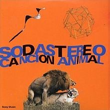

~Lista de musica~
Soda Stereo - De música ligera

De música ligera es una canción escrita por Gustavo Cerati y Zeta Bosio, e interpretada por la banda argentina Soda Stereo. Grabada y lanzada en el primer semestre de 1990 como el primer sencillo de su quinto álbum de estudio, Canción animal. Logró el puesto 1° en el ranking de las 500 mejores canciones del rock iberoame ricano por Al Borde en 2006, siendo así elegida como la mejor canción del rock en Iberoamérica de toda la historia; el puesto 20° de las 20 mejores canciones del rock en español por E! en 2011; el puesto 4° de las 100 mejores canciones del rock argentino por la Rolling Stone Argentina y MTV en 2002; y el puesto 4° de las 100 mejores canciones del rock argentino por Rock.com.ar en 2007. A nivel mundial, el sitio web recopilatorio de críticas musicales, Acclaimed Music, ubicó a «De música ligera» en el puesto 27° de las mejores canciones lanzadas en 1990, y en el puesto 293° de toda la década de los 90's
La Renga - El revelde

«El Revelde» es una canción del grupo de rock argentino La Renga, perteneciente a su quinto álbum, La Renga, publicado en 1998. Es una de las canciones más exitosas del álbum y del grupo. Fue considerada por la revista Rolling Stone la 25° mejor canción del rock argentino en la lista de las 100 canciones más destacadas.
Los Piojos - Como ali
«Como Alí» es una canción y sencillo de la banda de rock argentina Los Piojos, incluida originalmente en el sexto álbum de estudio de la banda titulado Máquina de Sangre del año 2003. Es una de las canciones más exitosas de la banda y hace un homenaje al famoso boxeador Muhammad Ali.
Los Redondos - Un Pacman en el Savoy
¡Bang! ¡Bang!… Estás liquidado es el cuarto álbum de estudio del grupo argentino de rock Patricio Rey y sus Redonditos de Ricota. La edición argentina de la revista Rolling Stone lo ubicó en el puesto 33.º entre los 100 mejores discos del rock nacional.
La Renga - Hablando de la Libertad

«Hablando de la libertad» es una canción de la banda de Hard rock La Renga. Es la Pista número 11 del álbum Despedazado por mil partes, es la última en Insoportablemente vivo y En el ojo del huracán. Se ha convertido en el cierre de todos los recitales de dicha banda, y una de las canciones más importantes dentro de su mundo.
Charly Garcia - Demoliendo Hoteles
«Demoliendo hoteles» es una canción compuesta e interpretada por Charly García; es pista número 1 su disco Piano Bar de 1984. La revista Rolling Stone y la cadena MTV la ubicaron en el puesto número 16 de las mejores canciones de la historia del rock argentino. A nivel mundial, el sitio web recopilatorio de críticas musicales, Acclaimed Music, ubicó a «Demoliendo hoteles» como la nonagésima octava mejor canción lanzada en 1984